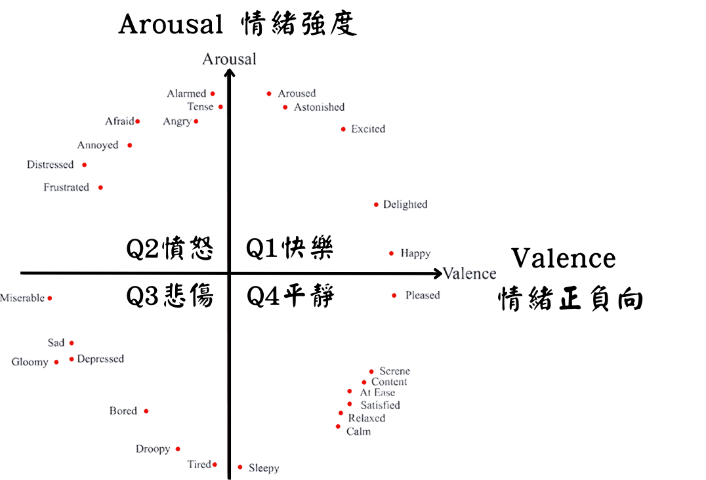

情緒分類
情緒維度
情緒被視為一個連續而非離散的形容詞， 維度模型比分類模型有著較低的歧義。因此在情緒分析中， 常利用Valence與Arousal兩個維度來表示情緒。
Valence代表情緒的正負向程度， 越往右表示情緒越正向，越往左則表示情緒越負向。 Arousal則代表情緒的強度， 越往上表示情緒越強烈，越往下則表示情緒較平靜。
根據這兩個維度，可以將情緒平面劃分為四個象限， 形成四種不同的情緒類型：
- Q1 快樂（High Valence / High Arousal）
- Q2 憤怒（Low Valence / High Arousal）
- Q3 悲傷（Low Valence / Low Arousal）
- Q4 平靜（High Valence / Low Arousal）
此模型由心理學家 Russell 提出， 被廣泛應用於情緒分析與音樂情緒辨識研究。

Valence 與 Arousal
Valence（情緒效價）表示情緒的正負向， 正向情緒如快樂、滿足， 負向情緒如悲傷、憤怒。
Arousal（情緒強度）表示情緒的激發程度， 例如興奮、激動屬於高 Arousal， 而放鬆、平靜則屬於低 Arousal。
透過這兩個維度，可以將不同情緒在平面座標中呈現， 使抽象的情緒概念能夠以數值與位置的方式具體化。